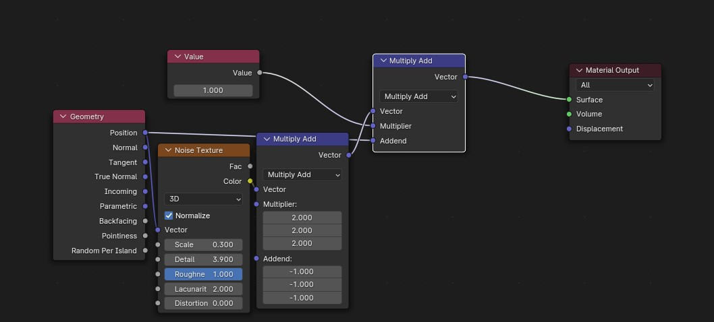
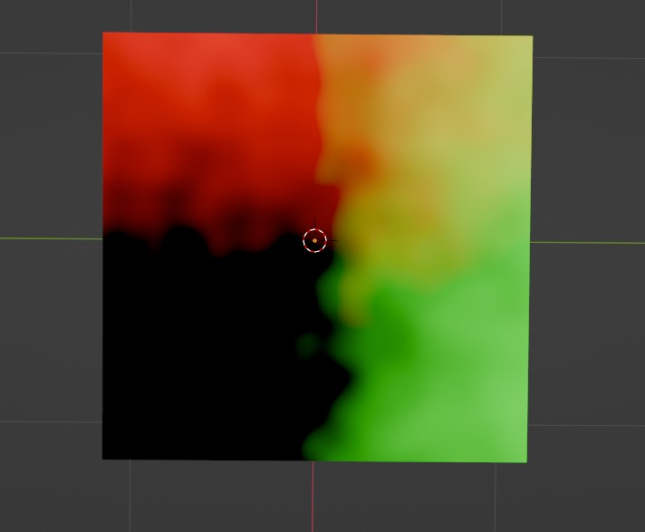
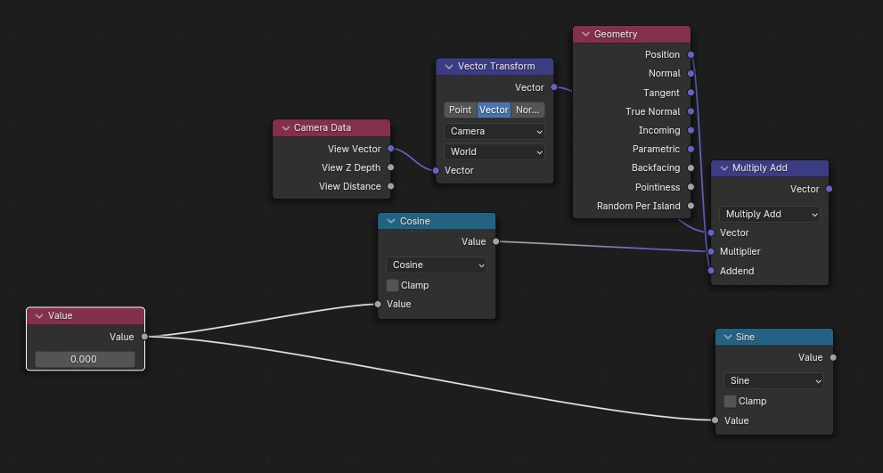
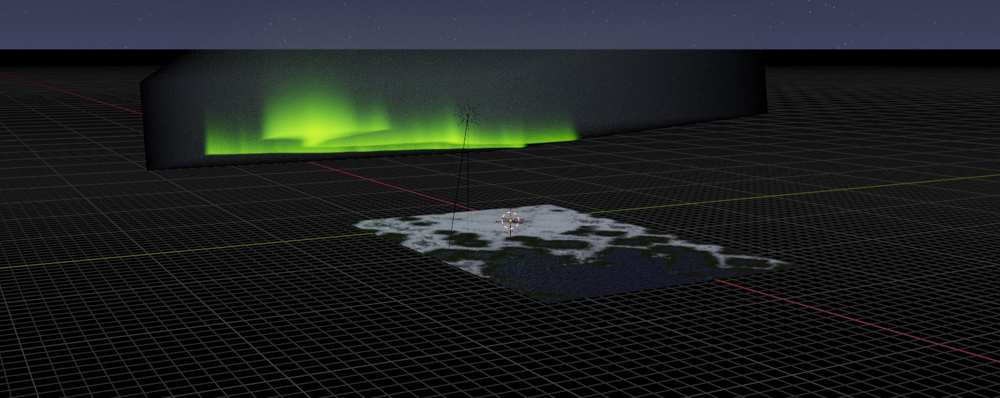

Timelapse of building the animation.
This scene was built entirely using mathematics and there's a couple ideas that I think are good enough that they need an explanation.
One of the first things I needed was a way to add noise to any function. The method needed to be continuous and scalable so I could stack noise function on top of each other. Both of these are very common in the noise of the real world so the hope would be that this would be enough to simulate anything I needed.
 This code uses perlin noise in seperate dimensions to 'skew' the numbers in a continuous manner. Perlin noise also allows for the scalability where noise functions can be added together.
Worly noise (voronoi noise) was added for the peaks of the mountains. Everything else involved using this method to get continuous noise functions.
A still image can be made with the idea above, and one could move around function seeds to get an animation. An issue can occur when looping is required. In this case the first frame and the last frame will not be close and an obvious cut will be visible.
A function then needs to be used that takes the input of frame number and outputs a new use for the seeding of the noise such that f(0)=f(a+1) where 0 is the first frame and a is the last frame. This function also needs to be continuous with no obvious transitions. Any change to the speed of frame change (pseudo acceleration) will be visible in the final animation.
The trick is to think in higher dimensions. There is no function on the real numbers that satisfies all the requirements necessary, but it does in the complex plane. A function as simple as eⁱˣ solves the requirements. The issue now is how changing a function from one input(real) into two inputs (real and imaginary)
One can create a noise function with more dimensions to satisfy this new requirement. For my product I was restricted by blenders native functions which only go as high as 4 dimensions. Because of the 3 spactial inputs with only one free dimension a trick was found to utilize a dimension of 3-space the was perpendicular to the camera
Sine and cosine are used as they are just the components of eⁱˣ. One part is used directly in the free dimension while the other is combined with the camera direction before incorporating with the position data.
different seeds can be found by adding values to the real of complex part. This was deemed unessesary as the position data was enough to have interesting and distinct visuals.
In my ever lasting quest for optimization, there are far too many objects I used to create this image. Currently There are 2 columetric cubes: one for the aurora and the other for the fog; and 3 planes: The landscape, water, and underside of water. With a lot of mathematics this can be simplified.
The planes can all be combined. The underside of the water causes minimal changes while the water is all one level. A simple height check is enough to switch from the land material to the water.
The fog can also be removed by a z-buffer. By measuring the distance a ray needs to travel before it hits a material and where that values is, a primative (but roughly the same) fog can be created using post-processsing effects.
fog is actually really well behaved if ideal. It's a linear effect over distance, which causes it to act as an exponential on a screen. Dealing with different scalings over the image was a bit of a pain, but was solved eventually.
The final scene, before any processing is done on geometry. This ended up saving almost nothing and causes longer render times due to post-processing effects.